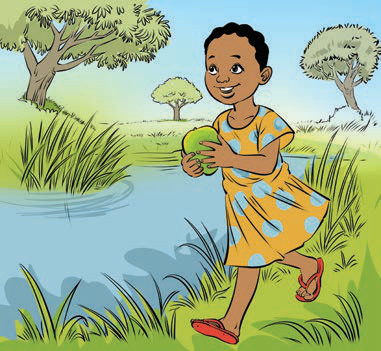
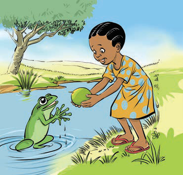
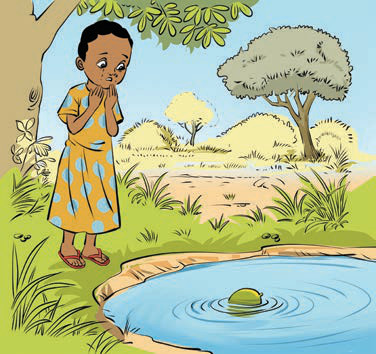
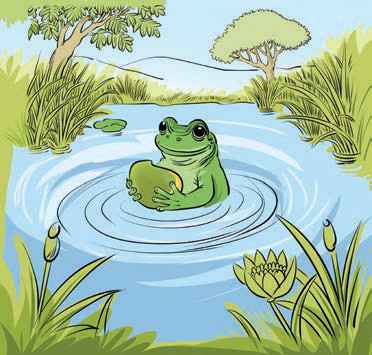

(b) Look at the pictures and answer the following questions.

1
2
3
4Questions
1. What do you think was the girl holding while walking along the pond?
2. Why did the girl begin to cry?
3. What do you think was the frog telling the girl to do?
4. What would you do if you were the girl in the picture?
5. What have you learnt from the story in this picture?